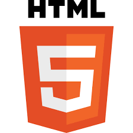

Résumé de la démarcheApproach Summary
Au cours de mon parcours, j'ai eu l'occasion au cours de deux SAE (une en première année et une en deuxième année) de réaliser un portfolio présentant mon parcours. Le site que vous consultez actuellement est le résultat du projet de deuxième année, conçu pour valoriser mes acquis techniques et humains.Throughout my journey, I had the opportunity during two SAEs (one in the first year and one in the second year) to create a portfolio presenting my background. The site you are currently visiting is the result of the second-year project, designed to highlight my technical and interpersonal skills.
Consulter le code source sur GitHub View source code on GitHubEnvironnement et OutilsEnvironment and Tools

HTML5 / CSS3 HTML5 / CSS3
Langages fondamentaux utilisés pour la structuration et la mise en forme personnalisée de l'interface utilisateur (UI).Fundamental languages used for structuring and custom formatting of the user interface (UI).
GitHub Pages
Service d'hébergement utilisé pour la mise en ligne du site et le versionnage des différentes itérations du projet.Hosting service used to publish the site and version the different iterations of the project.
Méthodologie de créationCreation Methodology
1. Réflexion et Arrangement1. Reflection and Arrangement
Définition de la structure du site et de la charte graphique afin de garantir une navigation fluide et une présentation claire de mon profil professionnel.Defining the site structure and graphic charter to ensure smooth navigation and a clear presentation of my professional profile.
2. Collecte de preuves2. Evidence Collection
Sélection et synthèse des documents techniques (schémas, captures d'écran, rapports) justifiant les travaux réalisés lors des SAE.Selection and synthesis of technical documents (diagrams, screenshots, reports) justifying the work done during the SAEs.
3. Création Web (HTML/CSS)3. Web Creation (HTML/CSS)
Développement intégral du site en code pur, permettant une personnalisation totale et une optimisation du temps de chargement.Complete development of the site in pure code, allowing total customization and optimization of loading times.
4. Analyse réflexive4. Reflective Analysis
Prise de recul sur chaque projet pour identifier les compétences acquises et les axes d'amélioration de mon parcours en BUT R&T.Taking a step back on each project to identify acquired skills and areas for improvement in my R&T Bachelor's journey.
Apprentissages Critiques ciblésTargeted Critical Learnings
Le développement du portfolio valide plusieurs AC issus du référentiel R&T :The development of the portfolio validates several critical learnings from the R&T framework:
- AC13.04 Connaître l’architecture et les technologies d’un site Web. Understand the architecture and technologies of a website.
- AC23.02 Développer une application à partir d’un cahier des charges donné, pour le Web ou les périphériques mobiles. Develop an application from a given specification, for the Web or mobile devices.
- AC12.05 Communiquer avec un tiers (client, collaborateur...) et adapter son discours et sa langue à son interlocuteur. Communicate with a third party (client, collaborator...) and adapt the discourse and language to the interlocutor.
- AC21.06 Travailler en équipe pour développer ses compétences professionnelles (par le biais de l'auto-évaluation et du bilan). Work in a team to develop professional skills (through self-assessment and review).
Analyse réflexiveReflective Analysis
En deuxième année, j'ai choisi de remplacer mon portfolio effectué sur la plateforme Mahara par un site web hébergé grâce à Github Pages, ce qui m'a permis de personnaliser mon site comme je le souhaitais. J'ai pu ainsi faire le bilan de mes projets et compétences en cours de BUT, tout en consolidant mes connaissances en développement web front-end. In the second year, I chose to replace my portfolio made on the Mahara platform with a website hosted via Github Pages, which allowed me to customize my site exactly as I wanted. This enabled me to review my ongoing Bachelor's projects and skills, while consolidating my knowledge in front-end web development.